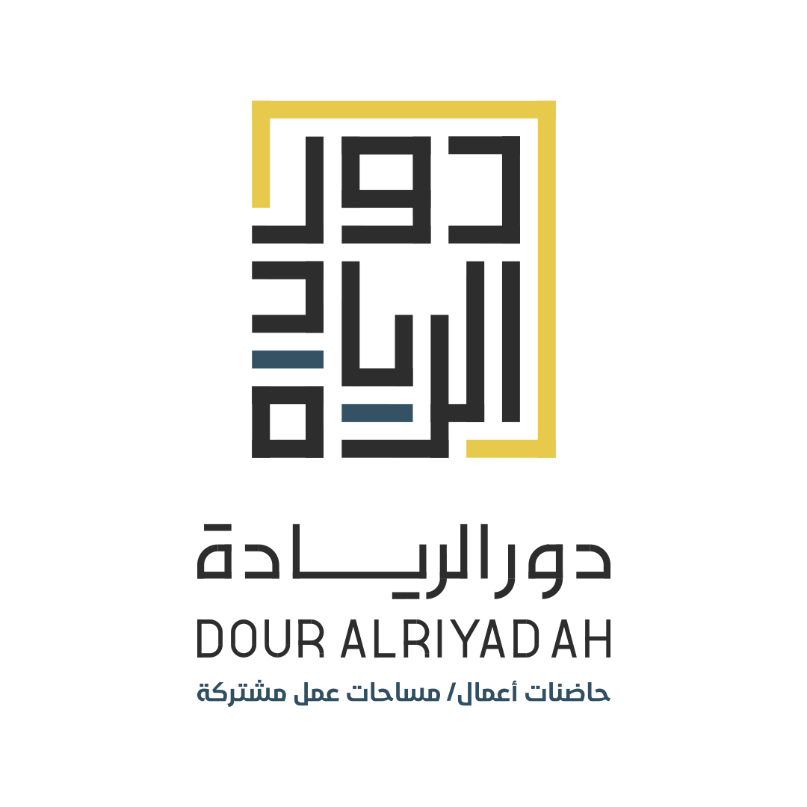
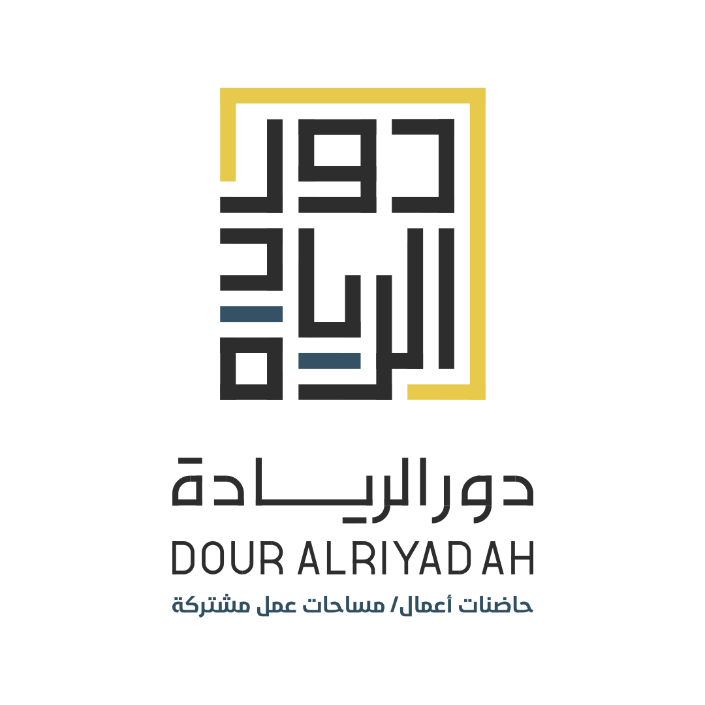
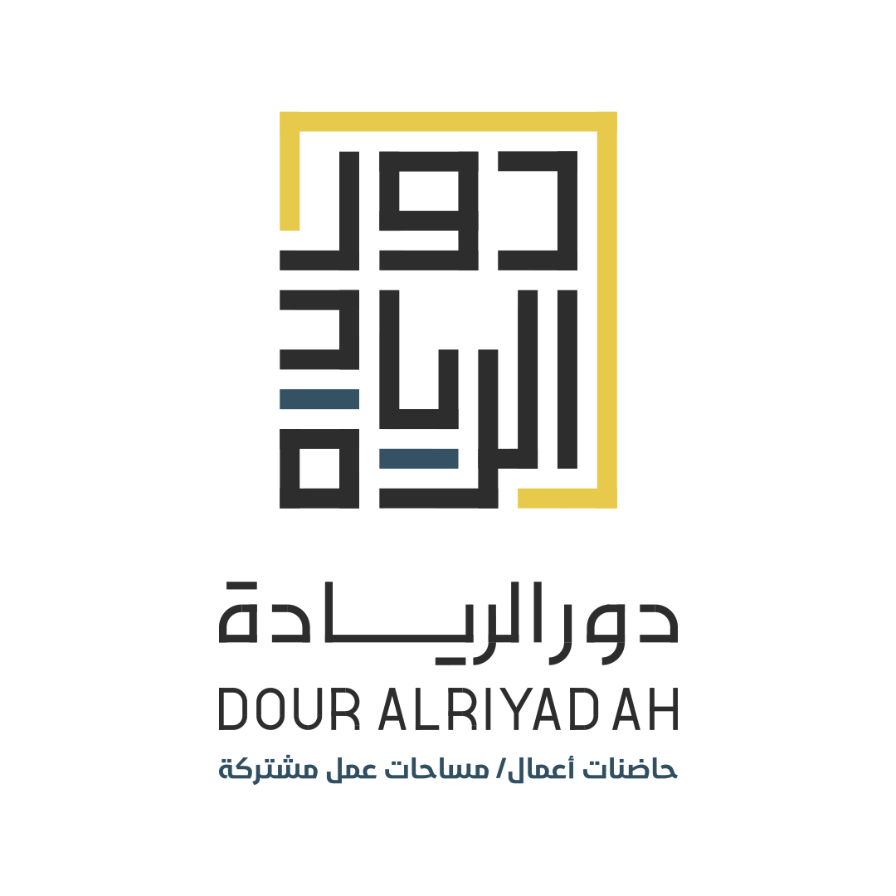
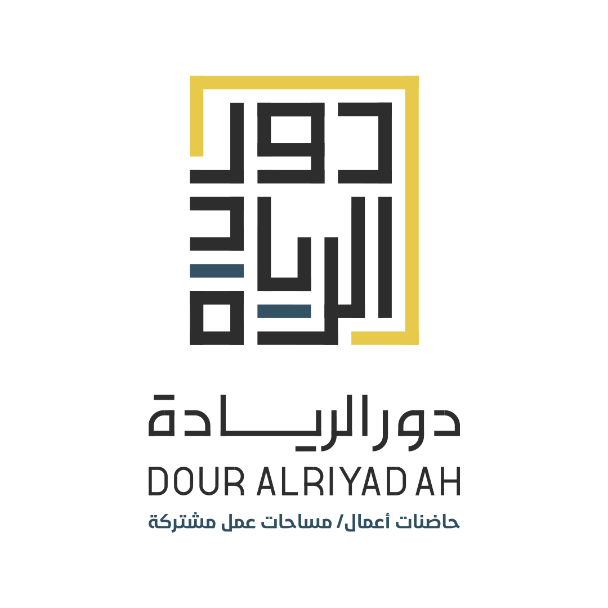
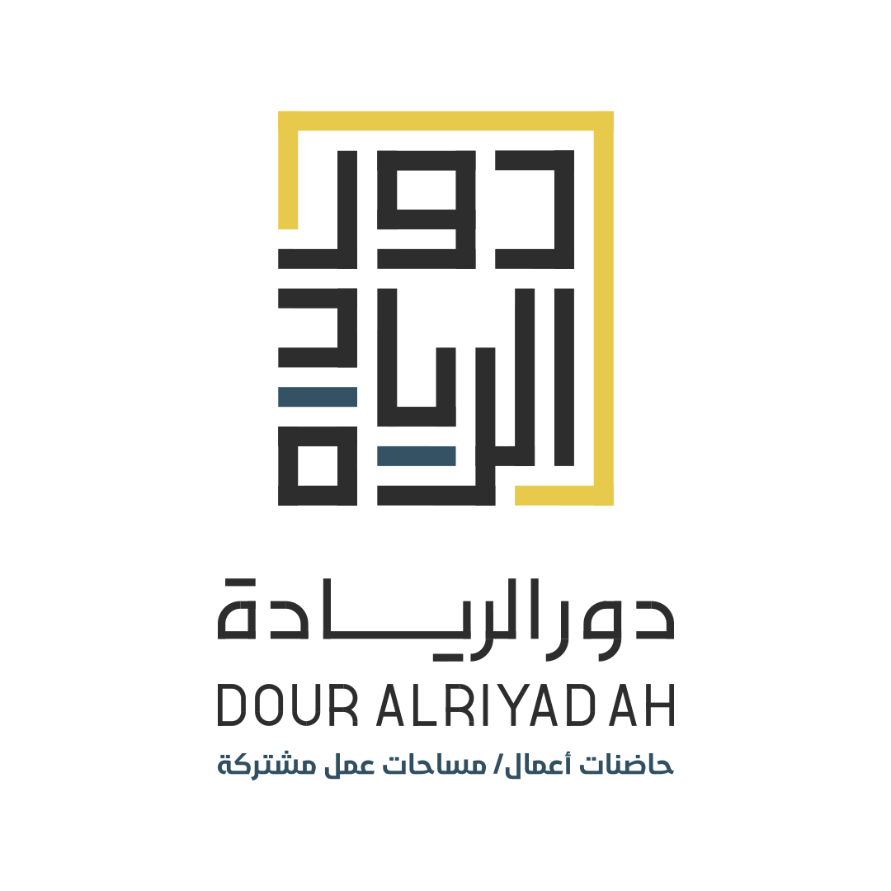

1: أي من العبارات التالية يصف أهم مبادئك إذا كنت بصدد عمل المشروع جديد؟
حماية خصوصية وأمان الأخرين
جعل الحياة اأسهل
تطوير أنظمة قوية تعمل بسلاسة
تقديم تجارب ممتعة وغامرة تحاكي الواقع
2: عندما تبدأ مشروعًا جديدًا، ما هي الخطوة الأولى التي تحب البدء بها؟
التفكير في توظيف الثورة واستخدام الذكاء الإصطناعي لتقديم ميزة ذكية
جمع وتحليل بيانات العملاء لفهم احتياجاتهم
تطوير برنامج أو تطبيق يسهل إدارة المشروع
الاهتمام بالعميل والتفكير بكيفية توفير تجربة تفاعلية للعملاء باستخدام تقنيات مبتكرة
3: ما الذي تستمتع بقضاء وقت فراغك به؟
حل الألغاز
تفكيك الأشياء لمعرفة كيفية عملها
ابتكار أفكار أو تصميم مشاريع جديدة
مشاهدة أفلام أو ألعاب تعتمد على الخيال
4: إذا أردت تعلم مهارة جديدة، فما هو المجال الذي ستختاره؟
أساليب حماية المعلومات والوقاية من المخاطر
تعلم أدوات التحليل واستنتاج المعلومات من البيانات
تعلم كيفية عمل الأجهزة وبناء أنظمة تقنية
تعلم مهارات التفكير المختلفة لإيجاد حلول مبتكرة
5: ما هو العنصر الأهم بالنسبة لك في أي بيئة عمل؟
الابتكار والتجديد المستمر
الوضوح وتوفر معلومات تساعد في اتخاذ القرارات
الاستقرار والكفاءة العالية
الإبداع وتقديم تجارب جديدة
6: إذا كنت تواجه مشكلة، ما هو الأسلوب الذي تميل إليه في حلها؟
البحث عن حلول تقليدية وآمنة لتجنب المخاطر
التفكير في حل يعتمد على الذكاء أو الابتكار
جمع جميع المعلومات المتاحة لتحديد السبب الأساسي للمشكلة
ابتكار طريقة جديدة أو تجربة حل غير تقليدي
إرسال
 


